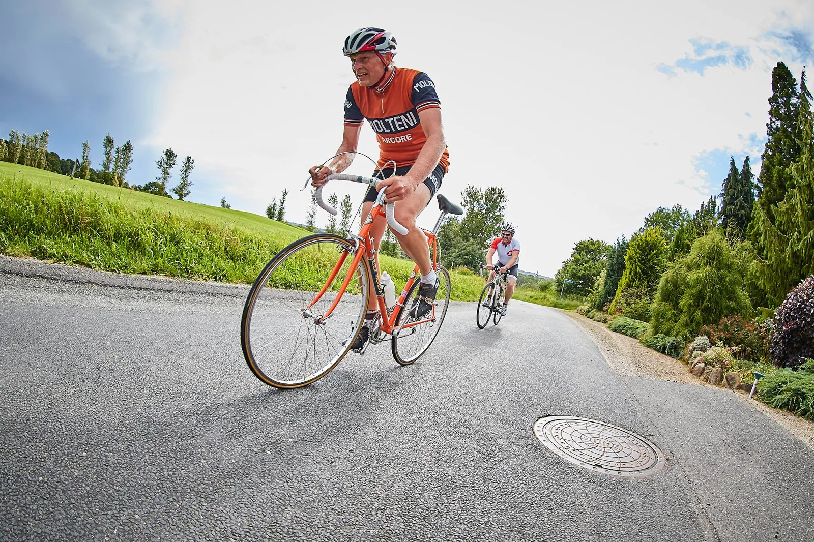
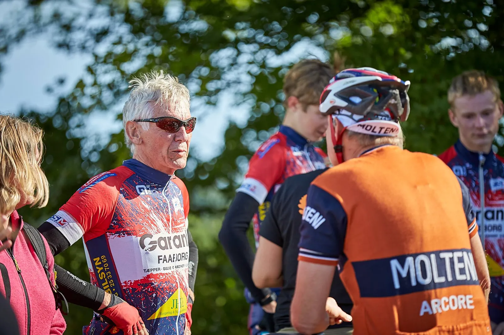

Bjergkongen af Sydfyn

Squadra Moltenis Carsten Jacobsen kørte i regn og blæst landevejsracet “Outdoor Sydfyn” i går. Menuen var en 5,5 km rute ved Svanninge med den berygtede Golfbakke, som det spetakulære indslag, der skulle forceres flest gange på to timer. Carsten Jacobsen vandt suverænt stålklassen.
Allerede ved starten på havnen i Faaborg vakte det orange lyn og Molteni- outfittet opmærksom, blandt lycradrengene.
Hva’ fanden er det du køre på? Hvor gammel er den låge? Vejer den ikke et ton? Er det uld den dér trøje?” Var nogle af bemærkningerne som faldt, fortæller Carsten.
Starten gik og den gamle ekvipage fandt hurtigt en plads i 2. gruppe. Desværre gav en punktering en ufrivillig pause allerede på anden omgang. Efter slangen var skiftet fortsatte jagten på omgange til lyden af taktfast bifald, hver gang toppen af Golfbakken blev passeret.

Punkteringen kostede en omgang, så facit blev 9 omgange til stålet. De hurtigste lykcradrenge nåede 13 omgange – så jeg er godt tilfreds, lyder det fra Moltenis sydfynske bjergkonge.
Efter løbet kom adskillige hen og skulle høre, hvad det var Carsten kørte på, og hvilken klub han repræsenterede. Mange var interesserede, så idéen og historien om Squadra Molteni blev formidlet videre til det sydfynske cykelmiljø.
